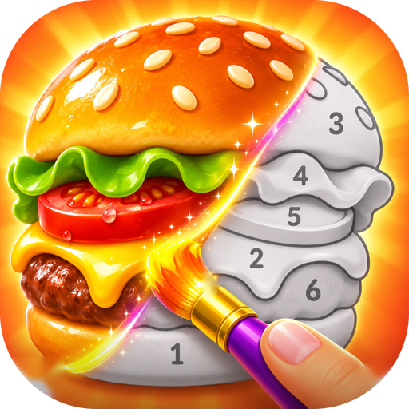
Snippets
Версии по порядку разработки, от первой к текущей. Нажми на карточку, чтобы запустить. Во всех версиях все уровни открыты, ?level=N открывает нужный уровень.
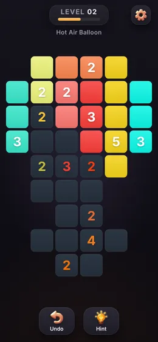
Механика по референсу
Картинку заранее не видно, на поле только цифры. Игрок сам рисует прямоугольники, клетки красятся по одной. Квадратные клетки, однотонные куски, тёмный фон, картинка открывается при победе.
Играть ▶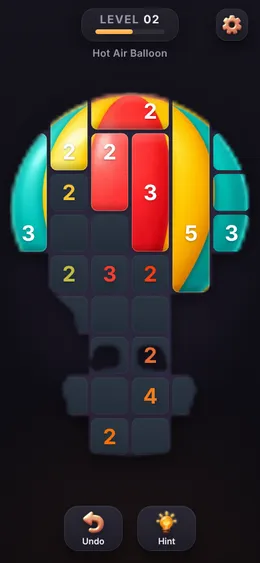
Поле в форме объекта
Клетки складываются в силуэт объекта с округлыми краями, у поставленного куска проявляется фактура финальной картинки.
Играть ▶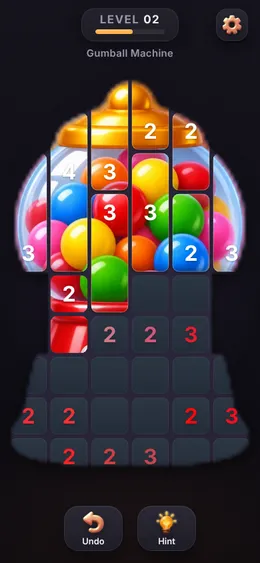
10 сочных уровней
Новые яркие картинки из ChatGPT: арбуз, жвачный автомат, бабочка, рыба, грибной домик, попугай, смузи, дракон, осьминог, зелье. Обучение рукой на 1-м уровне.
Играть ▶Мета-оболочка Meta Shell
Home / Shop / Journey, жизни, монеты, Season Pass, Treasury, Starter Pack, награды и экран победы, бустеры Hint и Fix. Арт оболочки пока из шаблона.
Играть ▶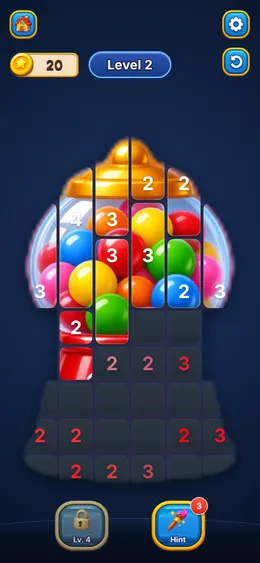
Маскот Snip и свой сеттинг
Шапки Treasury и Pass, Starter Pack, иконки нижней панели, бустеры-кисть и ластик, миры Journey с Snip в бумажном кораблике. Весь арт из ChatGPT.
Играть ▶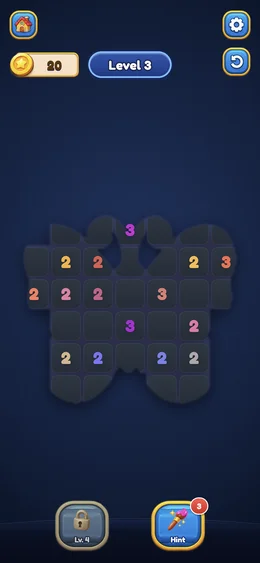
Рамка телефона на компьютере
Та же игра, что v5. На компьютере открывается в рамке телефона по центру экрана, на телефоне по-прежнему на весь экран.
Играть ▶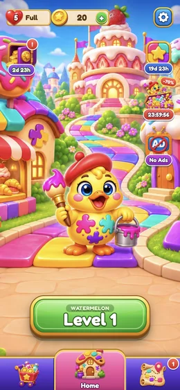
Маскот: утёнок-художник
Вместо Snip утёнок в берете с кисточкой и ведром краски: фоны главного экрана во всех 4 мирах, Treasury, Season Pass, Starter Pack, лодка на Journey, иконки и экран загрузки. Арт из ChatGPT. Рамка телефона как в v6.
Играть ▶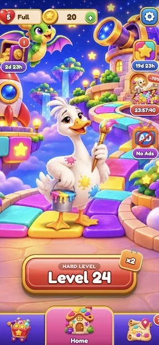
Маскот: белый гусь-художник
Вместо утёнка взрослый белый гусь с кисточкой и ведром краски, с мягким добрым лицом: фоны главного экрана во всех 4 мирах, карточки миров на Journey, Treasury, Season Pass, Starter Pack, лодка на Journey, иконки и экран загрузки. Арт из ChatGPT. Рамка телефона как в v6.
Играть ▶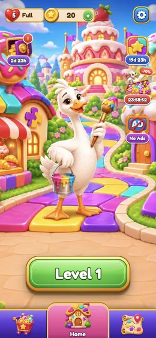
Гусь без клякс
Тот же белый гусь-художник, что в v8, но без цветных клякс краски на перьях: перья чистые белые на всех картинках (фоны 4 миров, карточки Journey, лодка, Treasury, Season Pass, Starter Pack, иконки, экран загрузки). Арт из ChatGPT. Рамка телефона как в v6.
Играть ▶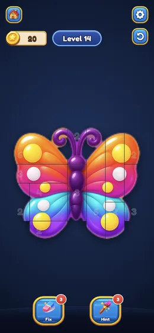
Ровные края и новый порядок уровней
Обновление уровней от Claude Cowork поверх v9: картинка больше не обрезается по краям поля, почти зеркальные объекты (бабочка, осьминог, шар, ракета) получают симметричное поле, числа и куски сгенерированы заново. Новый порядок 30 уровней: сначала самые понятные (пицца с обучением, шар, грибной домик…), жвачный автомат перенесён на 12-й, сложность растёт по номеру уровня. Гусь без клякс как в v9.
Играть ▶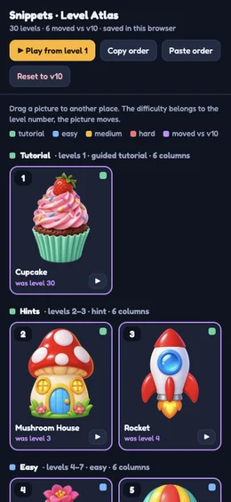
Атлас уровней: свой порядок картинок
Все 30 уровней v10 на одной странице. Картинку можно перетащить на другое место, поменять с другим уровнем или поставить на нужный номер; сложность остаётся за номером уровня. Кнопка ▶ запускает игру в этом порядке (с v12 атлас открывает v12). Порядок сохраняется в браузере, его можно скопировать и вставить обратно. Обычная v11.html без атласа играет как v10.
Открыть атлас ▶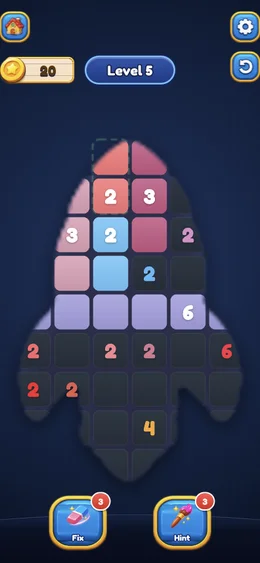
Картинка только в конце уровня
Тестовая версия: поставленные куски остаются однотонными, картинка не проступает во время игры и появляется целиком только после победы. Порядок уровней: 1-й арбуз, 2-й воздушный шар, 3-й пицца, дальше как в v10. Атлас уровней теперь запускает v12.
Играть ▶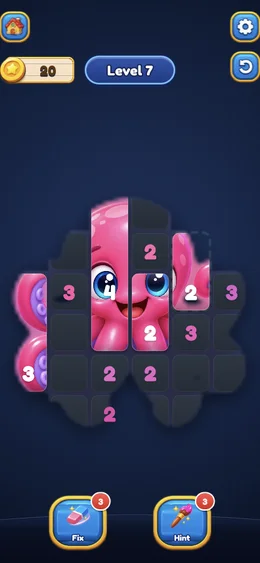
Новый порядок уровней
Игра как в v10 (картинка проступает на поставленных кусках), новый порядок: бургер, фотоаппарат, кактус, арбуз, рыба, мороженое, дальше от простых картинок к пёстрым (осьминог, хот-дог, тако, пончик, пицца… грибной домик и жвачный автомат в конце).
Играть ▶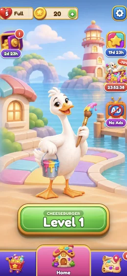
Спокойные фоны главного экрана
Фоны всех 4 миров перерисованы в ChatGPT: мягче по цвету, меньше деталей и предметов, по краям спокойные однотонные зоны, чтобы иконки офферов слева и справа не терялись. Гусь в центре прежний. Картинки миров на Journey в том же стиле, но без гуся, только локация. Уровни как в v13.
Играть ▶v1 и v2 собраны заново из текущего кода с выключенными поздними улучшениями, потому что ранние сборки не сохранялись отдельно. Самый первый прототип (еда с готовыми ходами и 3D-финалом) восстановить нельзя.